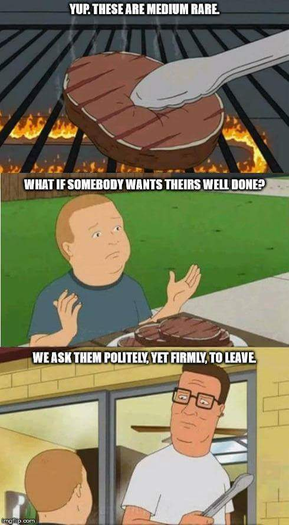

Steak

Description
Cooking a steak properly can seem daunting, but all you
need is a little time management, a little seasoning
and a willingness to eat
a few steaks that aren't quite there.
Timing
To cook your steak to exactly the way you like it (no
Hank Hill style judgements here), primarily comes from the cooking time.
Below we have a breakdown of the best cooking times for each
level of cooking:
- Rare: 1.5 mins per side.
- Medium rare: 2 mins per side.
- Medium: About 2.25 mins per side.
- Well-done steak: about 4-5 mins each side,.
Remember, start that pan out nice and hot and then bring the flame to a nice
medium heat, once the steak is in.

Seasoning
Seasoning your steak can be as complex or as simple as you
would like. As a bare minimum, a healthy dose of salt and pepper
should be added, but try out whatever herbs, spices or marinades you like.
A simple way to spruce up your steak is simply a nob of butter and a few sprigs of rosemary, added
to the pan a minute or so before the steak. Then, baste away!
Ingredients
- Steak - cut of your choice, we recoommend
300g+ per person
- 50 g Butter
- Pinch Salt
- Pinch Pepper
- Fresh Rosemary Sprigs (suggested)
Steps
- Heat pan on high, add butter and wait for it to melt before adding your rosemary
- Once the butter has melted, add your steak(s) and
reduce heat to medium.
- Flip your steak(s) as stated above.
Remove from pan and rest for 5-10 minutes
- Enjoy!